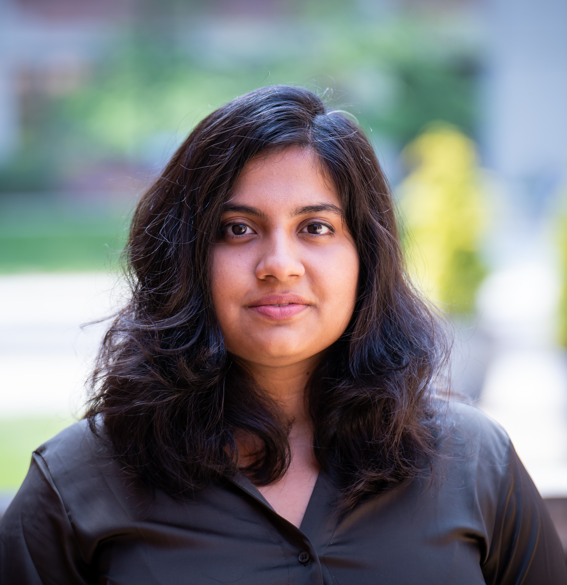

Leena R. Pade
Ph.D. Candidate,
Dept. of Chemsitry and Biochemistry,
University of Maryland, College Park, MD, USA
Ph.D. Candidate,
Dept. of Chemsitry and Biochemistry,
University of Maryland, College Park, MD, USA
Bioanalytical Chemistry
Proteomics and Metabolomics
Designing mass spectrometry approaches (LC-MS) to address specific challenges
Integrating mass spectrometry as a investigative tool to study diseases
Clinical applications of mass spectromety
Office:
091 Chemistry Building,
8051 Regents Dr,
University of Maryland College Park, MD 20742, USA,
E-mail:
leenapade (at) gmail.com
leenapade (at) umd.edu


Leena R. Pade earned her 'Bacherlor's of Pharmacy' degree from the Mumbai University, India, in 2016. She further pursued her Master's degree 'M.S. Pharmaceutical Analysis' at the National Institute of Pharmaceutical Education and Research in India. During her master's program, she interned at the analytic R&D lab of the United States Pharmacopeia (India). Her responsibilities included conducting stability studies on pharmaceutical drugs and excipients. She developed assays employing liquid and gas chromatrography (LC-UV, LC-MS, GC-FID, GC-MS) techniqes for quantifying drugs and drug prodcuts.
Currently undertaking her Ph.D. in Chemistry, she is under the guidance of Dr. Peter Nemes (UMD) and Dr. Ira Daar (NCI). She holds a fellowship at the National Cancer Institute (NIH) through the UMD-NCI patnership program. Recognized as the Cosmos scholar in 2021, her ongoing research focuses on developing sensitive mass spectrometry based approaches to enhance detection of proteins from biological tissues and single cells. She applies these developed approaches to address pivotal questions in developmental biology including delving into mechanisms that drive tissue induction and differentiation, as well as investigating the formation of neural and craniofacial tissues in developing embryos.